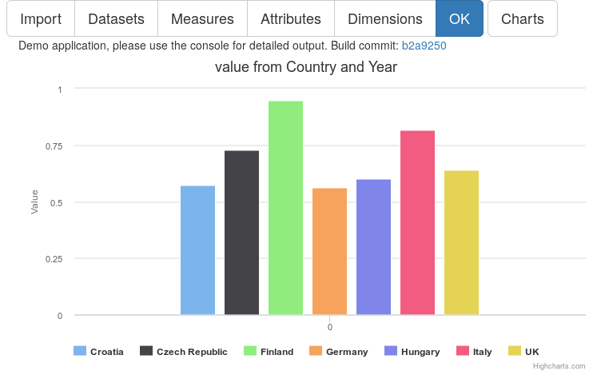

CubeViz - Statistical data discovery and visualization
Welcome on the project page of CubeViz. Here you will find more information about our work on CubeViz and CubeViz.js. We are currently very busy writing papers and writing code, so only a few facts are available. Expect to hear from us soon here.
# CubeViz.js - the standalone JavaScript application
CubeViz.js is the successor of CubeViz, the OntoWiki component. Its an Javascript application and doesn't need a PHP backend anymore. Its currently under heavy development, but expect new releases in the near future.
Project page
https://github.com/AKSW/cubevizjsDemo
- Demo page (latest version)
Screenshot:

# CubeViz - the OntoWiki component
CubeViz is an OntoWiki component providing faceted browsing in statistical data in the Linked Data Web. It was set up and adopted to be part of the Data Portal of the European Union. CubeViz utilizing the RDF DataCube vocabulary which is the state-of-the-art in representing statistical data in Resource Description Framework (RDF). This vocabulary is compatible with SDMX (User Guide) and increasingly being adopted. Based on the vocabulary and the encoded Data Cube, CubeViz is generating a facetted browsing widget that can be used to filter interactively observations to be visualized in charts. Based on the selected structure, CubeViz offer beneficiary chart types and options which can be selected by users.
Project page
https://github.com/AKSW/cubeviz.ontowikiInstallations
- Demo page (latest version)
- Open Data portal of European Commission (Not maintained anymore)
Screenshot:
[German law demands this]
Impressum:
Konrad Abicht
Universität Leipzig
Institut für Informatik
Abt. Betriebliche Informationssysteme
Augustusplatz 10
04109 Leipzig
E-Mail: abicht@informatik.uni-leipzig.de
Further information at aksw.org/Imprint